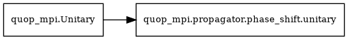

Diagonal
Propagators for diagonal operators in the computational basis. These are commonly used for phase/cost operators.
Propagator Class
- class quop_mpi.propagator.diagonal.unitary(*args, **kwargs)
Bases:
UnitaryCompute the action of a mixing unitary with a phase_shift operator or a sequence of mixing-unitaries with phase_shift operators (see the
unitary_n_paramsattribute below).Inheritance Diagram:

See
quop_mpi.Unitary.- Attributes:
- unitary_type
'phase_shift'- planner
false- unitary_n_params
Set on initialisation to
1or more. Ifunitary_n_parameters > 1, the Operator Function must return alist[csr_matrix]of lengthunitary_n_parameterscontainingcsr_matrixpartitions of oflocal_irows.
- propagate(gammas)
Simulation of the action of a :term`unitary`.
When implemented,
propagatecontains a call to a method (typically a contained in a complied Python extension module) that takes the class attributesinitial_state,final_stateandMPI_COMM, together with attributes describing the parallel partitioning scheme and variational parametersx, as input. The action of the unitary is computed in MPI parallel, with the computed result written tofinal_state.Warning
Not implemented by the base
Unitaryclass.- Parameters:
- xndarray[float64]
a 1-D real array of
n_paramsvariational parameters
Examples
def propagate(self, x): external_propagator( x, self.partition_table, self.initial_state, self.final_state, self.MPI_COMM )
Operators
Pre-defined operator functions for diagonal propagators.
Predefined Operator Functions and related utility
for quop_mpi.propagator.diagonal.unitary.
Return Format
An Operator Function for 'diagonal' unitary instances returns:
- diagonalndarray[float64] or list[ndarray[float64]]
A 1-D real array of size
local_icontaining the diagonal elements of the operator for global indiceslocal_i_offsettolocal_i_offset + local_i - 1.Alternatively, a list of such arrays for multiple diagonal operators (requires
unitary_n_paramsto match the list length).
If the Operator function returns list[ndarray[float64]], the unitary
instance must be initialised with unitary_n_parameters equal to the length
of returned list. The resulting unitary is then equivalent to a sequence of
phase-shift unitaries with independently
parameterised unitary parameters.
Propagation Method
The diagonal propagator computes \(e^{-itH}|\psi\rangle\) via direct element-wise multiplication:
where \(H_{kk}\) are the diagonal elements. This is the most efficient propagation method as it requires only \(O(N)\) operations with no communication between MPI ranks.
- quop_mpi.propagator.diagonal.operator.array(partition_table: list[int], MPI_COMM: Intracomm, array: np.ndarray[np.float64]) np.ndarray[np.float64]
Define the diagonal of the phase-shift unitary using a Numpy array.
An Operator Function for the
quop_mpi.propagate.diagonal.unitaryclass.Note
For memory efficiency,
arraycan be present as anndarray[float64]atMPI_COMM.rank == 0only andNoneat all other ranks inMPI_COMM.- Parameters:
- partition_tablelist[int]
describes the parallel partitioning scheme,
quop_mpi.Ansatzattribute- MPI_COMMIntracomm
MPI communicator,
quop_mpi.Ansatzattribute- arraynp.ndarray[np.float64]
a 1-D real array of size system size
- Returns:
- ndarray[float64]
a 1-D real array containing
local_ielements of the operator diagonal with global index offsetlocal_i_offset
- quop_mpi.propagator.diagonal.operator.cartesian(system_size: int, local_i: int, local_i_offset: int, Ns: list[int], deltas: list[float], mins: list[float], function: Callable, *args, **kwargs) np.ndarray[np.float64]
TODO:UPDATE Generate the diagonal of a phase-shift unitary operator using a Python function defined in discrete Cartesian coordinates.
An Observables Function. Depending on wether QVA simulation is defined using the
Ansatzclass directly or with a predefinedAnsatzsubclass from thealgorithmsubmodule, the following arguments must be defined in a corresponding FunctionDict on initialisation of theunitaryinstance:quop_mpi.Ansatz:Ns,deltas,minsandfunctionalgorithms in
quop_mpi.algorithm.combinatorial:Ns,deltas,minsandfunctionquop_mpi.algorithm.multivariable.qmoa:deltas,minsandfunctionquop_mpi.algorithm.multivariable.qowe:function
Additional positional and keyword arguments in the
FunctionDictare passed tofunction.The
functionargument must conform to the signature,def function(x: ndarray[float64], *args, *kwargs) -> float
where
xis a 1-D array containing alen(Ns)-dimensional grid point.- Parameters:
- system_sizeint
size of the simulated QVA
- local_iint
size of the local system state partition,
quop_mpi.Unitaryattribute- local_i_offsetint
global index offset of the local system state partition,
quop_mpi.Unitaryattribute- Nslist[int]
the number of qubits assigned to each dimension of the cartesian grid such that there is
2 ** Ns[d]grid points per dimensiond- deltaslist[float]
step size in each Cartesian coordinate
- minslist[float]
lower bound of each Cartesian coordinate
- functionCallable
a Python function that takes a list of
len(Ns)real coordinate values and returns afloat
- Returns:
- ndarray[float64]
a 1-D real array containing
local_ielements of the operator diagonal with global index offsetlocal_i_offset
See also
setup_cartesiancompute
deltasandminscartesian_scaledalternative to
cartesian, scalesfunctionbetween0and an upper bound.
- quop_mpi.propagator.diagonal.operator.cartesian_scaled(system_size: int, local_i: int, local_i_offset: int, MPI_COMM: Intracomm, Ns: list[int], deltas: list[float], mins: list[float], function: Callable, coeff: float, *args, **kwargs) np.ndarray[np.float64]
Generate the diagonal of a phase-shift unitary operator using a Python function defined in discrete Cartesian coordinates with the function scaled between
0andcoeff.An Observables Function. Depending on wether QVA simulation is defined using the
Ansatzclass directly or with a predefinedAnsatzsubclass from thealgorithmsubmodule, the following arguments must be defined in a corresponding FunctionDict on initialisation of theunitaryinstance:quop_mpi.Ansatz:Ns,deltas,mins,functionandcoeffalgorithms in
quop_mpi.algorithm.combinatorial:Ns,deltas,mins,functionandcoeffquop_mpi.algorithm.multivariable.qmoa:deltas,mins,functionandcoeffquop_mpi.algorithm.multivariable.qowe:functionandcoeff
Additional positional and keyword arguments in the
FunctionDictare passed tofunction.The
functionargument must conform to the signature,def function(x: ndarray[float64], *args, *kwargs) -> float
where
xis a 1-D array containing alen(Ns)-dimensional grid point.- Parameters:
- system_sizeint
size of the simulated QVA
- local_iint
size of the local system state partition,
quop_mpi.Unitaryattribute- local_i_offsetint
global index offset of the local system state partition,
quop_mpi.Unitaryattribute- Nslist[int]
the number of qubits assigned to each dimension of the cartesian grid such that there is
2 ** Ns[d]grid points per dimensiond- deltaslist[float]
step size in each Cartesian coordinate
- minslist[float]
lower bound of each Cartesian coordinate
- functionCallable
a Python function that takes a list of
len(Ns)real coordinate values and returns afloat- coefffloat
a positive real number, the upper bound of the scaling range
- Returns:
- ndarray[float64]
a 1-D real array containing
local_ielements of the operator diagonal with global index offsetlocal_i_offset
See also
setup_cartesiancompute
deltasandminscartesian_scaledalternative to
cartesian_scaled, does not scalefunction
- quop_mpi.propagator.diagonal.operator.csv(partition_table: list[int], MPI_COMM: Intracomm, filename: Callable, *args, **kwargs) np.ndarray[np.float64]
Load the diagonal of a phase-shift unitary using pandas.
An Operator Function for the
quop_mpi.propagate.diagonal.unitaryclass. Thefilenameargument must be defined in a corresponding FunctionDict on initialisation of theunitaryinstance. Additional keyword arguments in theFunctionDictare passed to the pandas.read_csv method.- Parameters:
- partition_tablelist[int]
describes the parallel partitioning scheme,
quop_mpi.Ansatzattribute- MPI_COMMIntracomm
MPI communicator,
quop_mpi.Ansatzattribute- filenameCallable
path to a
*.csvfile
- Returns:
- ndarray[float64]
a 1-D real array containing
local_ielements of the operator diagonal with global index offsetlocal_i_offset
- quop_mpi.propagator.diagonal.operator.hdf5(partition_table: int, MPI_COMM: Intracomm, filename: str, dataset_name: str) np.ndarray[np.float64]
Load the diagonal of a phase-shift unitary using HDF5 for Python.
An Operator Function for the
quop_mpi.propagate.diagonal.unitaryclass. Thefilenameanddataset_namearguments must be defined in a corresponding FunctionDict on initialisation of theunitaryinstance. Additional positional and keyword arguments in theFunctionDictare passed to the h5py.File method.- Parameters:
- partition_tableint
describes the parallel partitioning scheme,
quop_mpi.Ansatzattribute- MPI_COMMIntracomm
MPI communicator,
quop_mpi.Ansatzattribute- filenamestr
path to a
*.h5 file- dataset_namestr
path to the dataset containing a
ndarray[float64]of size system size
- Returns:
- np.ndarray[np.float64]
a 1-D real array containing
local_ielements of the operator diagonal with global index offsetlocal_i_offset
- quop_mpi.propagator.diagonal.operator.serial(partition_table: list[int], MPI_COMM: Intracomm, variational_parameters: np.ndarray[np.float64], function: Callable, *args, **kwargs) np.ndarray[np.float64] | list[np.ndarray[np.float64]]
Generate the diagonal of the operator for one or more sequential phase-shift unitaries using a serial Python function.
An Operator Function for the
quop_mpi.propagator.diagonal.unitaryclass. Thefunctionargument must be defined in a corresponding FunctionDict on initialisation of theunitaryinstance. Additional positional and keyword arguments contained in the FunctionDict are passed tofunction.The
functionargument must conform to the signature,def function(*args, *kwargs) -> (ndarray[float64] | list[ndarray[float64]])
where the output is a 1-D real array of type
ndarray[float64]and length system size, orlistcontaining one or more 1-D real arrays of typendarray[float64]and lengthsystem_size.- Parameters:
- partition_tablelist[int]
describes the parallel partitioning scheme,
quop_mpi.Ansatzattribute- MPI_COMMIntracomm
MPI communicator,
quop_mpi.Ansatzattribute- variational_parametersndarray[float64]
operator parameters, passed to
functionifunitary.operator_n_params > 0,quop_mpi.Unitaryattribute- functionCallable
returns one or more
ndarray[float64]of size system size corresponding to the diagonal of the operator of one or more phase-shift unitaries
- Returns:
- ndarray[float64] or list[ndarray[float64]]
a 1-d real array or list of 1-D real arrays containing a
local_ielements of the operator diagonal with global index offsetlocal_i_offset
- quop_mpi.propagator.diagonal.operator.setup_cartesian(Ns: list[int], bounds: list[list[float]]) list[list[float]]
Compute the step-size and minimum coordinate values in each dimension of a Cartesian grid.
- Parameters:
- Nslist[int]
the number of qubits assigned to each dimension of the Cartesian grid such that there is
2 ** Ns[d]grid points per dimensiond- boundslist[list[float]]
the lower and upper bounds of each dimension where
len(Ns) == len(bounds)
- Returns:
- list[list[float]]
the step-size,
deltas, and the minimum,mins, in each Cartesian coordinate
See also